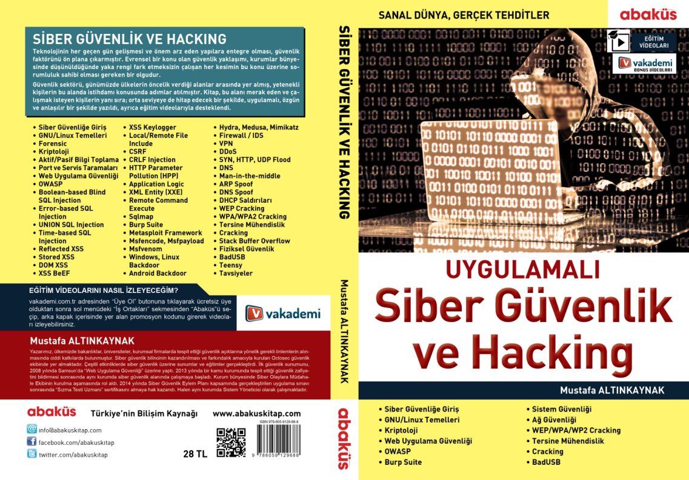

Yaklaşık bir seneyi aşkın süredir üzerinde çalıştığım "Uygulamalı Siber Güvenlik ve Hacking Kitabı" Akademik Bilişim 2017'in ilk gününde Abaküs Kitap standında satışa sunuldu.
Nerelerden satın alabilirim?

Kitapta hangi konular yer alıyor?
- Siber Güvenliğe Giriş
- GNU/Linux Temelleri
- Forensic
- Kriptoloji
- Aktif/Pasif Bilgi Toplama
- Port ve Servis Taramaları
- Web Uygulama Güvenliği
- OWASP
- Boolean-based blind SQL Injection
- Error-based SQL Injection
- UNION-based SQL Injection
- Time-based SQL Injection
- Reflected XSS
- Stored XSS
- DOM XSS
- XSS BeEF
- XSS Keylogger
- Local/Remote File Include
- CSRF
- CRLF Injection
- HTTP Parameter Pollution (HPP)
- Application Logic
- XML Entity (XXE)
- Remote Command Execute (RCE)
- Sqlmap
- Burp Suite
- Metasploit Framework
- Msfencode, Msfpayload
- Msfvenom
- Windows, Linux Backdoor
- Android Backdoor
- Hydra, Medusa, Mimikatz
- Firewall/IDS
- VPN
- DDoS
- SYN, HTTP, UDP Flood
- DNS
- Man-in-the-middle
- ARP Spoof
- DNS Spoof
- DHCP Saldırıları
- WEP Cracking
- WPA/WPA2 Cracking
- Tersine Mühendislik
- Cracking
- Stack Buffer Overflow
- Fiziksel Güvenlik
- BadUSB
- Teensy
- Tavsiyeler
ve çok daha fazlasını kitap içerisinde bulabilirsiniz.